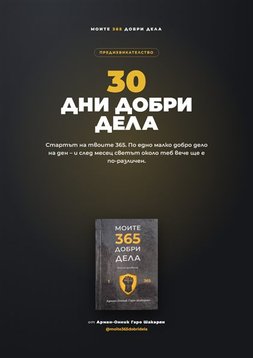
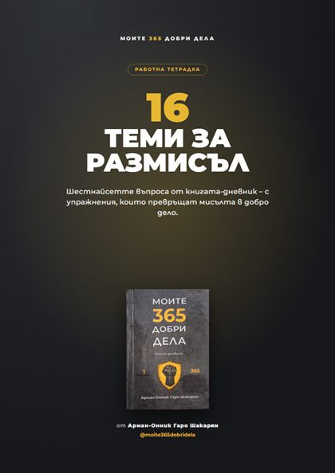
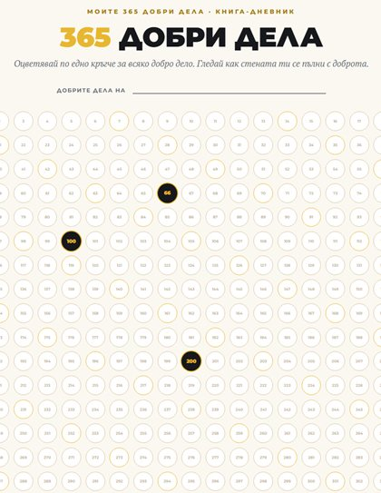
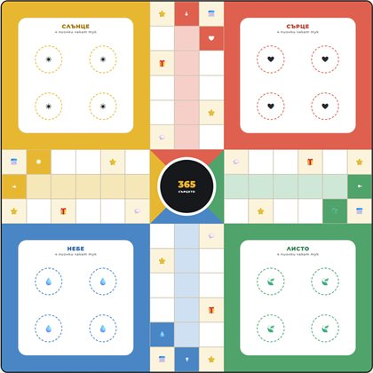

PDF · 8 страници · A4
30 дни добри дела
Предизвикателството: по една задача на ден за 4 седмици, тракер с 30 кръгчета и мини сертификат накрая.
ИзтеглиБлагодарим ти! Тук е всичко, което ти трябва, за да започнеш още днес – докато книгата-дневник пътува към теб. Запази си тази страница: можеш да се връщаш тук винаги.

Предизвикателството: по една задача на ден за 4 седмици, тракер с 30 кръгчета и мини сертификат накрая.
Изтегли
Работна тетрадка с шестнайсетте въпроса от книгата – по три въпроса за размисъл и едно малко действие към всяка тема.
Изтегли
Закачи го на стената и оцветявай по едно кръгче за всяко добро дело. Спирките 66, 100, 200 и 365 са отбелязани като в книгата.
Изтегли
Любимата игра със зарче, но печели този, който прави добро по пътя. Изтегли правилата и картите и една дъска – според принтера си.
Правила, карти и пионкиПри печат избери „Действителен размер“ (100%), не „по размер на листа“.
Цитати от книгата, които ще ти напомнят за доброто всеки път, щом отключиш телефона. Докосни тапет, задръж пръста върху снимката и избери „Запази“.
„Как да започнеш“, „Стигна ли 100 дни?“ и „Когато ти е трудно“ – три кратки лични послания от автора. Ще се появят тук – просто се върни на тази страница.